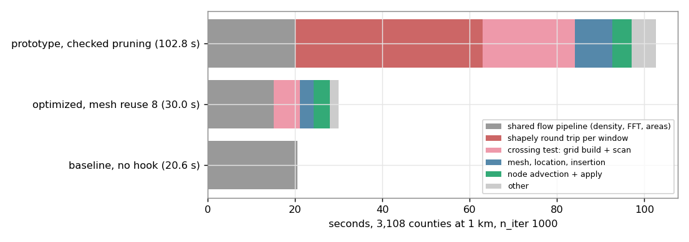

The quadtree-window prototype took 102.8 s on the 3,108 counties (5 times the baseline, 78 s of it in the per-window hook, 43 s in a shapely round trip). A numba path without the round trip, a one-pass checked pruning of inserted vertices and reuse of the deformed mesh for several windows bring it to 29.4 s (median of 3, spread 28.3 to 30.1 s; baseline 20.6 s) at 0 invalid polygons in 45 of 45 runs at the baseline iteration budget, and to 19.4 s on the raw 43 k-vertex coarse input (the earlier coverage_simplify variant: 94 s). Accuracy at that budget is worse than the baseline (the finest level is not reached); with a budget of 3,000 iterations the runs that do not stall reach a mean error of 0.4 to 0.8 % but take 126 to 265 s. Against validated windows the quadtree is 1.3 to 3.3 times slower, ends with 1.2 to 1.4 M vertices (1.6 to 1.8 times the input) and still has failure modes (one inverted triangle in 140 runs gave 4 invalid polygons); its advantage is the raw coarse input, where validated windows leaves 6 to 11 invalid polygons.
The quadtree-window prototype (exploration-quadtree-windows) reached 0 invalid polygons but took 72 to 94 s on the counties (3 to 4 times the baseline) and 102 s with a topology-checked pruning. How fast can the method be made, at 0 invalid polygons, and what does it keep (input vertices, lineage, accuracy, vertex count)? This page profiles the prototype, describes the optimized hook (pwo.py), and compares it with validated windows.
prof_pw.py: the first-round hook with the checked pruning (SAFE=1, leaves 2^-6 of the cells, pruning tolerance 0.02 cell), 3,108 counties, n_iter 1000, 102.8 s in total (the baseline run is 20.6 s).
| component | time | share |
|---|---|---|
hook begin (per window, 100 windows) | 78.4 s | 76 % |
of which: _restructure (shapely from_ragged_array + unpack_geometries per window, 198 calls) | 43.0 s | 42 % |
| crossing test of the checked pruning: grid build 7.9 s + scan 13.3 s (220 calls) | 21.1 s | 21 % |
point location 3.3 s, quadtree construction and grading 2.5 s, insertion (_count 1.1 s + _fill 1.7 s), pruning mask 0.2 s | 8.8 s | 9 % |
| node advection and affine apply per iteration (1,000 calls) | 4.4 s | 4 % |
| the flow pipeline shared with the baseline (density, FFT, areas, scores) | about 20 s | 19 % |
So 62 % of the time was bookkeeping of the prototype (the shapely round trip and the unoptimized crossing test), not the method.
pwo.py)_count, _fill) already return the new coordinates and ring offsets; the hook writes coords, the first ragged offset array and the geometry metadata (rebuild_metadata, a loop over the regions) in place. The pandas lineage matching is gone: the events are recorded directly, ('ins', new_idx, pa, pb, pt) and ('rm', kept_idx), and backfill(coords, events) lifts any earlier frame to the final structure. Checked in t_backfill_pw.py: the 768,580 input vertices lifted through 79 events give 1,373,587 vertices, equal to the final structure, the signed ring areas of the lifted input equal the input (collinear points), and all 768,580 input vertices are still flagged as input vertices at the end. (The events after the returned best iterate are discarded when the best iterate is restored.)rebuild_every windows or earlier if a triangle area fell below min_ratio (0.6) of its area at construction or a triangle is inverted. A piecewise-affine map of a non-inverted mesh stays injective, so the sub-segments inside triangles cannot cross.algorithm.py (PW_HOOK.reset, begin, advance, structure, restore).Progression on the counties, n_iter 1000 (single runs while developing, idle machine):
| step | time | vertices at the end | invalid |
|---|---|---|---|
| prototype with checked pruning | 102 s | 1.24 M | 0 |
| + numba path, lineage without pandas, chord test counting the own path as an obstacle (conservative) | 43.0 s | 2.0 M | 0 |
| + own-path and twin-path exclusion in the chord test (output identical to the prototype: mean 3.49 %, median 0.055 %) | 38.6 s | 1.10 M | 0 |
| + pruning every 3rd window | 30.7 s | 0.91 M | 0 |
| + mesh reuse 8 with the area rule | 22.2 s | 0.91 M | 0 |
| (same, protocol runs with the final settings, median of 3) | 29.4 s | 1.2 M | 0 |
The last two rows differ because the first was one run that stalled early and the second is the median of 3 with the budget used (the same code; the iteration count differs, see below).
| setting | result (counties, n_iter 1000, one run unless stated) |
|---|---|
| leaves 2^-4 / 2^-5 / 2^-6 / 2^-8 of the cells, pruning every 3rd window | 44 / 32 / 30.7 / 28.6 s; 2.5 M / 1.3 M / 0.9 M / 0.86 M vertices; 0 invalid in all; the final errors vary from 2.6 to 7.5 % (budget and stall chaos) |
| mesh reuse k = 2 / 4 / 8 without the area rule | 29.8 / 22.2 / 19.2 s; 0 / 6 / 2 invalid: inverted triangles inside windows (6 iterations with 26 inverted triangles at k = 4) |
| mesh reuse with node substeps and the area rule 0.3 | k = 4 / 8 / 16: 0 invalid, 32 / 22 / 26 s (the rule forces a rebuild in 13 of 26 windows at k = 8) |
| area rule 0.6 (final) | 0 invalid on all inputs, 45 of 45 runs |
window map error against the baseline per-vertex advection (pwshadow.py, shadow mode, no dynamics change) | mean 0.0016 cell, p99 0.017, max 0.19 to 0.95 cell at the finest level (leaves 2^-6); 2^-4 leaves: mean 0.0012; splitting the leaves by the curvature of the velocity field instead of the density range: no better (mean 0.0031 at 2^-6, 0.0013 at 2^-4) |
| pruning every 2nd or 3rd rebuild with mesh reuse | slower (36.8 s and 31 to 33 s against 29.4 s): more vertices to insert |
| pruning without the foreign-vertex test | 36.6 s, 813 k vertices, but 6 invalid polygons (nested shells, below) |
Pitfalls found in the checked pruning (all produced invalid polygons or no pruning at all before they were fixed):
maxring) it prunes as well as without the test and gave 0 invalid polygons in all runs. That limit is a heuristic (a long thin region with more than 64 vertices inside the sliver would be missed); I have no proof.Variants: q1 = mesh rebuilt every window; q4, q8 = reuse for up to 4 or 8 windows with the area rule 0.6; leaves 2^-6, pruning tolerance 0.02 cell, maxring 64. Baseline = no hook; vw10 = validated windows every 10 windows (first-round hook, float64 fields). Time = median of 3 with [min-max]; peak memory = ru_maxrss of the run. The repeats are deterministic except for numba noise, which changes the iteration count of the long runs.
n_iter 1000 (the baseline protocol; the pooled budget ends the runs before the finest level, so the errors are budget-bound):
| input | run | time | peak memory | invalid | vertices at the end | mean / median / p95 error | >10 % |
|---|---|---|---|---|---|---|---|
| counties | baseline | 20.6 s [20.5-22.7] | 965 MB | 57 | 768,580 | 1.37 / 0.252 / 2.44 | 60 |
| counties | vw10 | 23.0 s [22.0-23.6] | 1,448 MB | 0 | 769,473 | 1.08 / 0.195 / 2.63 | 45 |
| counties | q8 | 29.4 s [28.3-30.1] | 1,249 MB | 0 | 1,215,166 | 5.22 / 0.448 / 22.4 | 290 |
| counties | q4 | 35.4 s [35.2-36.2] | 1,595 MB | 0 | 1,373,587 | 4.10 / 0.569 / 17.4 | 224 |
| counties | q1 | 49.3 s [48.3-51.4] | 2,119 MB | 0 | 1,385,077 | 4.30 / 0.764 / 15.2 | 263 |
| districts | baseline | 1.8 s [1.6-1.8] | 414 MB | 2 | 343,042 | 0.48 / 0.264 / 1.90 | 0 |
| districts | vw10 | 2.1 s [2.0-2.2] | 453 MB | 0 | 343,046 | 0.48 / 0.262 / 1.89 | 0 |
| districts | q8 | 7.0 s [6.4-8.4] | 599 MB | 0 | 373,326 | 2.13 / 1.639 / 5.66 | 0 |
| coarse, raw | baseline | 11.4 s [10.8-13.5] | 794 MB | 327 | 43,084 | 12.3 / 0.934 / 49.7 | 508 |
| coarse, raw | q8 | 19.4 s [18.4-20.1] | 777 MB | 0 | 483,957 | 6.70 / 0.493 / 28.8 | 388 |
| coarse, raw | q4 | 19.8 s [18.7-20.4] | 790 MB | 0 | 484,677 | 5.91 / 0.706 / 25.7 | 320 |
| coarse, raw | q1 | 40.2 s [32.6-44.1] | 1,598 MB | 0 | 939,164 | 1.60 / 0.117 / 3.72 | 83 |
| mid2000 | baseline | 17.9 s [17.7-18.9] | 868 MB | 170 | 394,665 | 1.66 / 0.208 / 6.65 | 100 |
| mid2000 | vw10 | 23.2 s [21.9-23.7] | 1,340 MB | 1 | 399,459 | 2.13 / 0.195 / 10.95 | 171 |
| mid2000 | q8 | 23.0 s [21.5-23.4] | 975 MB | 0 | 843,088 | 5.03 / 0.535 / 21.7 | 283 |
| mid3000 | baseline | 11.2 s [10.9-12.0] | 844 MB | 194 | 280,377 | 3.12 / 0.441 / 11.0 | 169 |
| mid3000 | vw10 | 15.0 s [14.1-15.1] | 1,274 MB | 0 | 283,545 | 1.59 / 0.131 / 4.18 | 75 |
| mid3000 | q8 | 20.7 s [20.5-21.1] | 912 MB | 0 | 737,682 | 6.63 / 0.611 / 28.1 | 369 |
n_iter 3000 (the stall rule ends the baseline and validated runs at the same point as with 1000; the quadtree runs that do not stall continue to improve):
| input | run | time | peak memory | invalid | vertices at the end | mean / median / p95 error | >10 % |
|---|---|---|---|---|---|---|---|
| counties | q4 | 35.6 s [33.9-35.9] | 1,610 MB | 0 | 1,373,587 | 4.10 / 0.569 / 17.4 | 224 |
| counties | q8 | 144 s [39.5-160.8] | 2,335 MB | 0 | 1,666,394 | 0.55 / 0.286 / 2.43 | 4 |
| counties | q1 | 54.5 s [51.9-55.2] | 2,305 MB | 0 | 1,589,674 | 3.35 / 0.661 / 15.0 | 239 |
| districts | q8 / q4 / q1 | 5.7 / 7.9 / 12.2 s | 597 / 615 / 795 MB | 0 | 373,326 / 373,180 / 390,080 | 2.13 / 2.27 / 1.56 mean | 0 |
| coarse, raw | q4 | 73.5 s [69.1-74.6] | 1,656 MB | 0 | 937,895 | 0.85 / 0.197 / 2.05 | 40 |
| coarse, raw | q8 | 126 s [37.8-127.3] | 1,857 MB | 0 | 942,376 | 0.65 / 0.346 / 1.44 | 14 |
| coarse, raw | q1 | 265 s [206-281] | 4,902 MB | 0 | 970,910 | 0.39 / 0.201 / 0.96 | 4 |
| mid2000 | q8 | 139 s [134-142] | 2,067 MB | 0 | 1,294,257 | 0.36 / 0.157 / 1.36 | 9 |
| mid2000 | q4 | 28.2 s [27.3-28.8] | 1,383 MB | 0 | 1,009,313 | 4.52 / 0.458 / 19.3 | 262 |
| mid3000 | q8 | 143 s [131-161] | 2,224 MB | 0 | 1,189,440 | 0.76 / 0.390 / 2.05 | 13 |
| mid3000 | q4 | 29.5 s [29.1-30.1] | 1,328 MB | 0 | 881,436 | 3.65 / 0.664 / 14.5 | 205 |
analyze_timing.py). The quadtree needs more iterations than the baseline to reach the stall (counties 980 to 1,050 against 820; districts 418 to 470 against 135).Perturbed configurations: dt 0.16, 0.18, 0.20, 0.22, 0.24 and max_segment_length 800 and 1200 (7 configurations at 1,000 iterations; 6 at 3,000: the q1 run of max_segment_length 800 failed to produce a record). Baseline: the first-round protocol (p1, same configurations). Metrics on the counties valid in all compared runs (analyze_proto.py).
n_iter 1000, 7 configurations, medians over configurations: invalid baseline 80 (18 to 116), q1 0 (0 to 4), q4 0, q8 0. Mean error 1.37 (baseline), 3.84 (q1), 3.07 (q4), 4.61 (q8); counties above 10 %: 60, 240, 204, 244. The quadtree runs are worse because the pooled budget ends them before the finest level (runs of 700 to 870 iterations in the first level against 540 to 650 for the baseline).
n_iter 3000, 6 configurations, medians over configurations (paired ratios to the baseline with a 95 % bootstrap interval of the median):
| invalid | mean | median | p95 | >10 % | |
|---|---|---|---|---|---|
| baseline | 83.5 (18 to 116) | 1.24 | 0.131 | 2.68 | 62.5 |
| q1 | 0 (0 to 2) | 1.12, ratio 0.56 (0.08 to 3.8) | 0.354, ratio 3.0 (1.0 to 12) | 2.53, ratio 0.75 (0.08 to 6.7) | 37.5, ratio 0.13 (0.0 to 4.6) |
| q4 | 0 | 2.10, ratio 1.77 (0.54 to 3.3) | 0.298, ratio 2.5 (1.2 to 15) | 6.5, ratio 2.5 (0.4 to 10) | 111, ratio 1.78 (0.45 to 3.9) |
| q8 | 0 | 2.12, ratio 1.29 (0.71 to 3.0) | 0.213, ratio 1.8 (0.9 to 7.8) | 8.1, ratio 1.6 (0.7 to 10) | 127.5, ratio 1.10 (0.22 to 4.0) |
With six configurations the intervals are wide: the mean error and the count above 10 % cannot be told apart from the baseline for any variant (the q4 and q8 ratios lean worse, the q1 ratio leans better), and the median error is 1.8 to 3 times higher, as for validated windows (the same mechanism applies: the baseline's invalid polygons stay frozen, see exploration-validity-research). The accuracy of the piecewise-affine window itself is not the cause: its error against the per-vertex advection is 0.0016 cell on average (shadow mode above). I could not show that the accuracy is in the range of the baseline for q4 and q8 with this protocol; q1 is the closest.
| validated windows (every 10 windows) | optimized quadtree (q8) | |
|---|---|---|
| raw coarse input (43 k vertices) | 6 to 11 invalid with the flatness criterion at 55 s and 100 k vertices; 0 to 3 only after densifying the input to 1.4 cells (24 s, 131 to 146 k vertices) | 0 invalid in all 18 coarse runs (q1, q4, q8, two budgets, three repeats): q8 19.4 s (n_iter 1000) or 37 to 126 s (n_iter 3000), 0.48 to 0.94 M vertices |
| counties | 23.0 s, +0.1 % vertices, 1,448 MB (float64; 1.1 GB with float32 and a budget) | 29.4 s, +58 % vertices (1.2 M), 1,249 MB |
| mid3000 | 15.0 s, +1 % vertices | 20.7 s, +163 % vertices |
| mid2000 | 23.2 s, 1 invalid | 23.0 s, 0 invalid, +114 % vertices |
| districts | 2.1 s | 7.0 s |
| guarantee | empirical (exact test at the window end, retroactive repair); residual cases are cusps below 4 mm and islands jumping thin boundaries | by construction while no triangle inverts; 1 inversion in about 140 runs gave 4 invalid polygons; the island-ring limit of the pruning test is a heuristic |
| input vertices, lineage | kept; events (new_idx, left, t) | kept (only inserted vertices are removed); events for insertion and removal |
| accuracy | median and p95 error higher than the baseline, mean and >10 % unchanged | same effect; at the baseline budget the finest level is not reached |
At 1,000 iterations on the counties (q8, 30.0 s): the flow pipeline shared with the baseline 15 s, the crossing test of the pruning 6.0 s (grid build over 1.2 M segments plus the chord scan, 143 ms per rebuild), the rest of the pruning 1.2 s, insertion 2.0 s, mesh 0.7 s, geometry write 0.7 s, location 0.4 s, node advection and apply 3.8 s. On the raw coarse input (q8, 17.6 s): the pruning check 5.8 s of 8.0 s in begin, advection 1.6 s. Not tried: a local grid built only around the chords (about a 2 times faster check), prefiltering the chords by the local triangle edge distance, a single-pass insertion (the count pass walks every segment once more), and a mesh on a coarser density. The mesh reuse is limited by the area rule: with 0.6 it forces a rebuild in 28 of 42 windows at k = 8.
The vertex count of the quadtree runs (1.2 to 1.4 M on the counties, 0.5 to 0.97 M on the raw coarse input) is not in the range of the baseline (0.77 M, 43 k) and is set by the pruning tolerance and the iteration count; the pruning only removes vertices that were inserted.
pwo.py: PWO hook (mesh reuse, inversion control, node substeps), prune_mask2 (hash local maxima), the chord check scan_q and build_grid_m, backfill for insertion and removal events. Dependencies: pw.py (quadtree construction, grading, location, apply), pw2.py (_count, _fill), xing.py (grid), vw.py (rebuild_metadata).pwo.py (current hook), pwo2.py (development copy with the curvature criterion), pwshadow.py (shadow mode), pwo_run.py (runner; environment variables BITS, TOL, PEVERY, REBUILD, MINRATIO, MAXRING, NODIST, DIAG, PF), prof_pw.py (profile of the prototype), protopw.sh (perturbation protocol), timing.sh, timing1.sh (repeated timings), analyze_timing.py, analyze_proto.py, t_backfill_pw.py, t_meta.py, figs3.py, the logs log_*.log, protocol.jsonl, algorithm_hooks_vw.patch (hook sites, PW_HOOK.reset and the velocity argument), and the dependencies harness.py, xing.py, vw.py, pw.py, pw2.py, run.sh (scratch path of the session hard-coded).

Where the time of the 3,108-county run goes: the prototype with checked pruning, the optimized hook with mesh reuse 8, and the baseline.